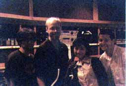
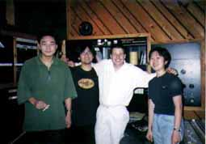
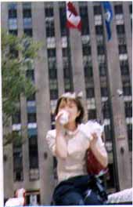
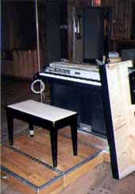

|

|
右から、ロイ・ヘンドリクソンさん、熊谷、ゼブ・カッツェさん、床井
俺、黒っ!!
私はこの日から、ロイさんの「笑顔ファン」になりました。
無表情だった顔が、カメラを向けられた瞬間に変わるんです。（とこい）
サラサラ〜っと弾いてあっという間にお仕事終了!（くまたに）
|
|

|
右から、あやさん、ロイ・ヘンドリクソンさん、床井、てつさん
音楽をやっててこんな人達と一緒に仕事できることは、私にとってとても刺激となったし、何か1つ道が開けたかんじ。（くまたに）
ロイさんの笑顔は私にとってごちそうです。（とこい）
|
|

|
熊谷さん（ブンちゃん）
これがかなりおいしい。
暑いんだけどサラサラしててほんと気持ちよかったー。（くまたに）
俺ってば、うしろのビルヂングにぴんと合わせてるっす。
めちゃさぶう。（とこい）
|
|

|
ローズ・スーツケース
小杉さんは「ウィルリーとフィリップは天才だ」と言ってたけど、
本当に感心感激するばかり。
ほんとにお上品な音色でした。（くまたに）
めちゃくちゃ欲しいんです、これ。（とこい）
|

|
フィリップとローズ・スーツケース
私達にその腕前を披露してるところ。
フレンチらしくって、しかもかなりのお坊ちゃまなんだって。（くまたに）
うまいんです。
詳しくは、Diaryで。（とこい）
|
インデックスにもどる |